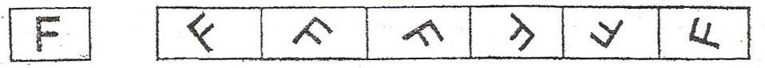
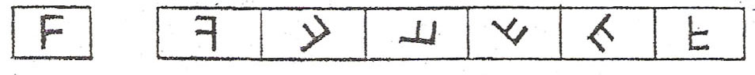
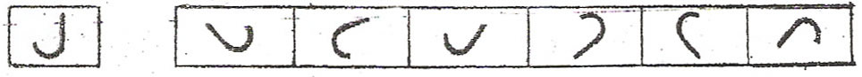
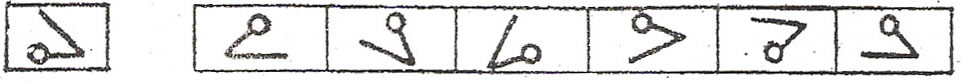
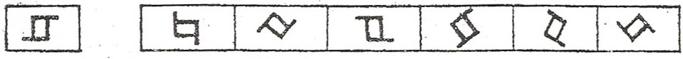
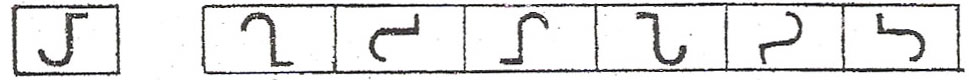

En esta prueba se evaluará su capacidad en factor E.
Mire la fila de figuras de debajo. La primera figura es como una F. Todas las restantes figuras son EXACTAMENTE IGUALES a la primera, pero han sido colocadas en diferentes posiciones Sólo falta ponerlas derechas para ver que son EXACTAMENTE IGUALES a la primera. Obsérvelo.

Ahora mire la fila siguiente de figuras. La primera es semejante a una F. Pero ninguna de las restantes es IGUAL a F, aun en el caso de que las pusiera derechas. Están hechas todas al revés. Lo que tiene que hacer es imaginárselo.

Algunas de las figuras que siguen son IGUALES a la primera. otras están al revés.

En la imagen siguiente algunas figuras son IGUALES a la primera figura. Por eso estan marcadas con el boton de seleccion arriba de cada una.

En la fila que sigue, fijese bien en las figuras que son IGUALES a la primera. ¿Cuáles son? Deberian marcarse. Haga mentalmente este ejemplo.

Las que deberia de haber marcado son la primera y la penultima.
Haga lo mismo con las filas de abajo. Resuelva mentalmente los ejercicios.

En la primera fila fila habría que seleccionar la A, D y F. En la segunda fila, las soluciones son C y F.
Recuerde que en cada fila puede haber un número cualquiera de figuras IGUALES a la primera. Asegúrese de que ha comprendido bien la manera de hacer esta prueba. Cuando el examinador dé la señal, tendrá usted que resolver otras semejantes. Trabaje deprisa, pero procurando no equivocarse. Tendrá CINCO MINUTOS para toda esta prueba. S no termina no se preocupe, es lo corriente.